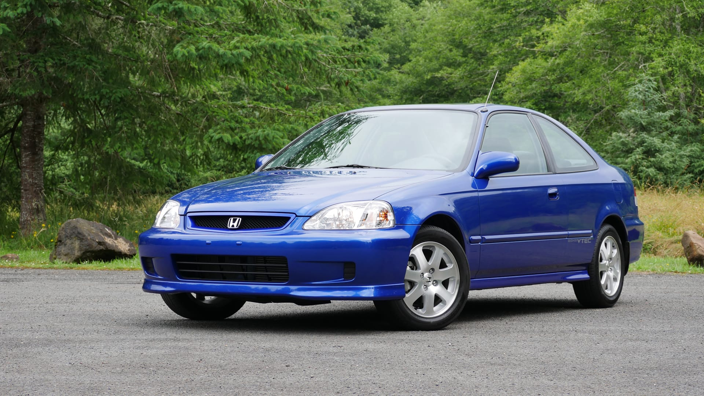

1999 Honda Civic

The 1999 Honda Civic is a compact, reliable, and fuel-efficient car known for its
longevity and low maintenance costs. It came in several trims (CX, DX, LX, EX, HX, and Si),
with options for sedan, coupe, and hatchback. Most models used a small 4-cylinder engine (1.6L),
offering smooth daily driving and excellent gas mileage. The Si model was the sportier version,
featuring a more powerful VTEC engine and upgraded suspension.
Overall, the ’99 Civic is valued for being simple, durable, cheap to run, and easy to repair,
which is why it remains popular in the used-car and tuner communities.
Features
- Automatic or Manual
- JDM
- Front-Wheel Drive
- 4-cylinder Engine
- Great aftermarket commnuity
- VTEC
Aftermarket
- Lower Suspension
- Cold Air Intake
- Aftermarket Wheels
- Turbo
- Aftermarket Exhaust
- Short Shifter
Common Issues
- Overheating
- White Smoke
- Coolant Loss
- Very Common on high-mileage Civics
- Overheating
- Leaks near the front
- Coolant Smell
- Worn control arm bushings
- Damage ball joints
- Weak Shocks
- Slipping
- hard Shifting
- Failure around 150k-200k
- Valve cover Gasket
- Oil Pan Gasket
- Cam Plug Seal